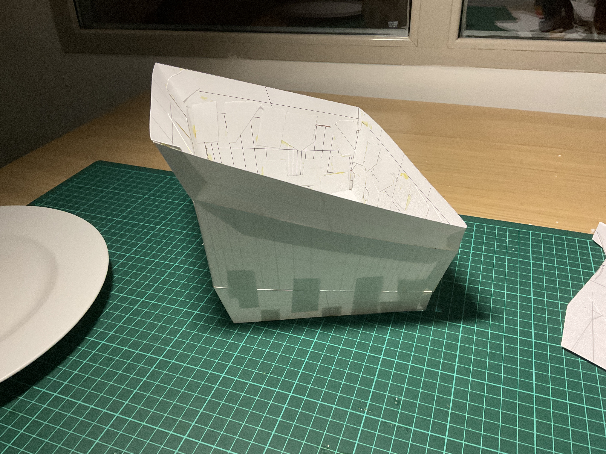
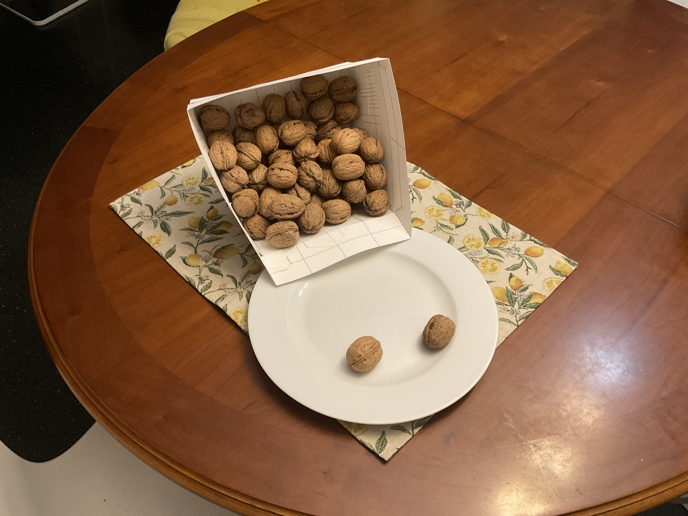
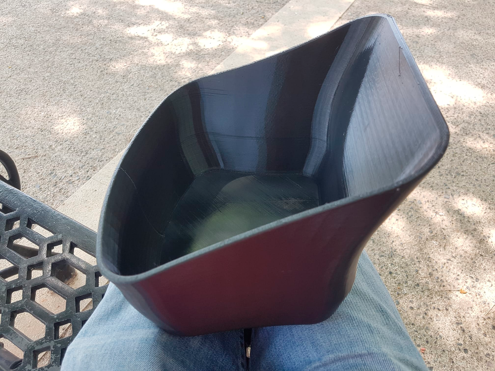
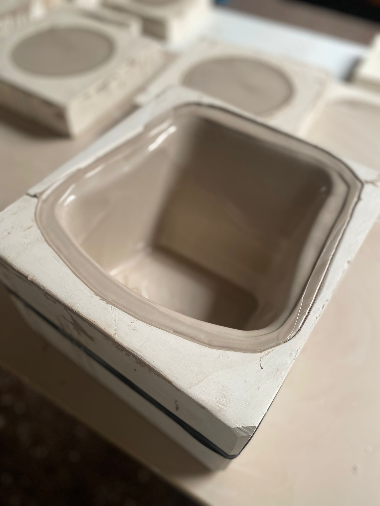
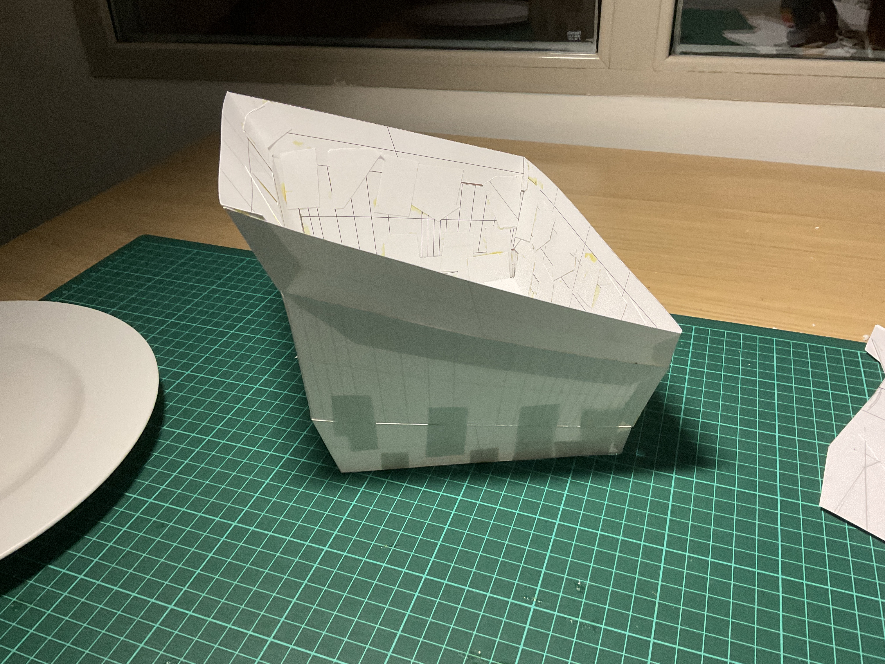
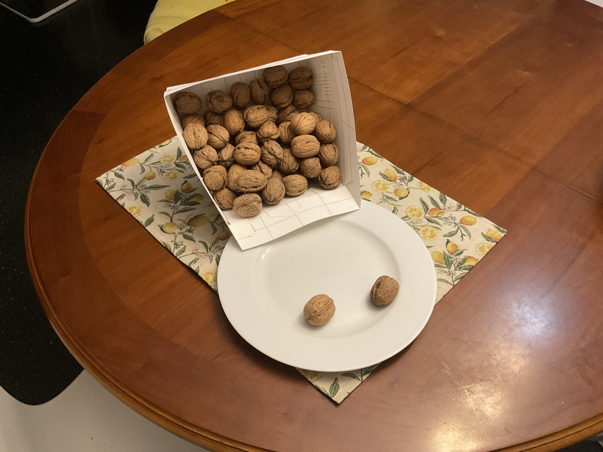
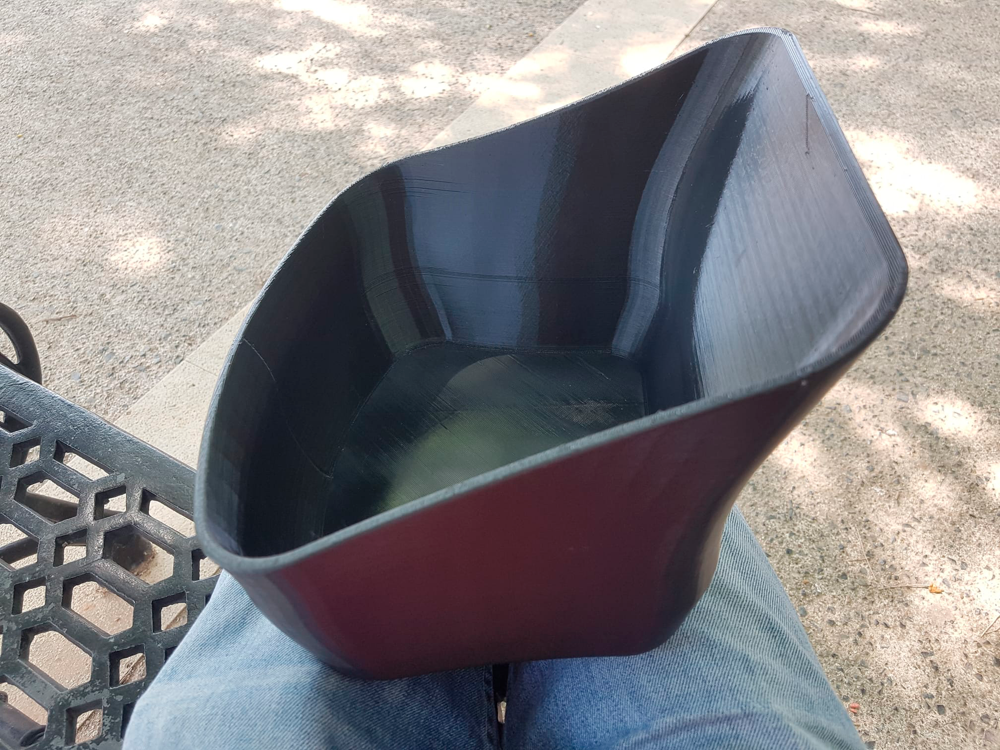
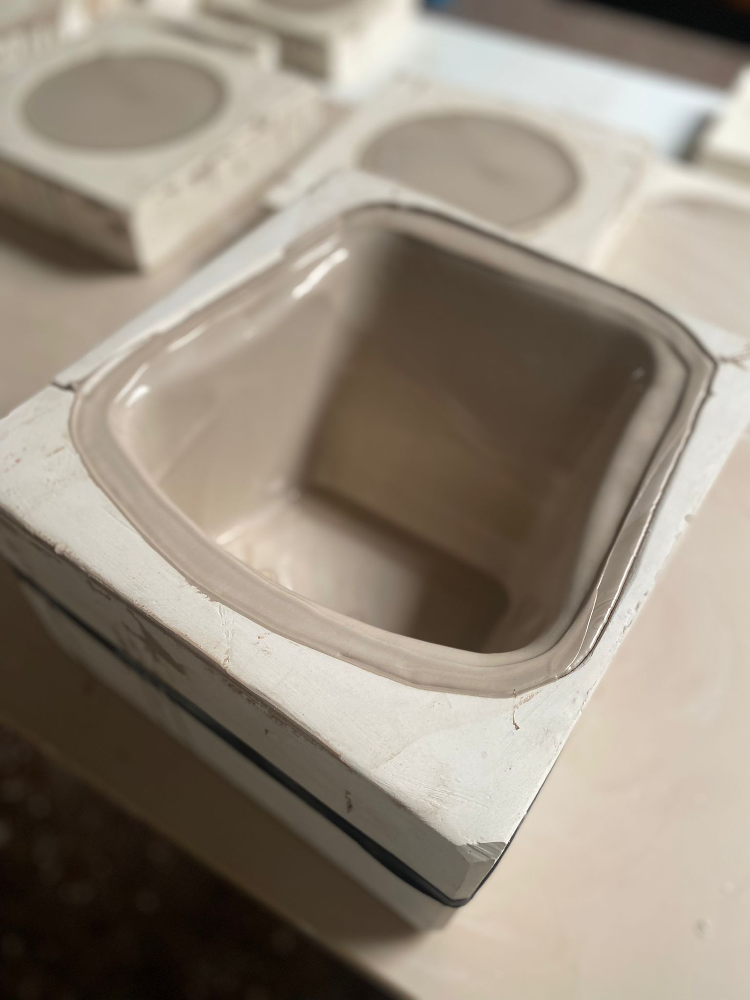

WHY??
Craftsmanship transcends mere production; it embodies a philosophy that values passion for materials over virtuality and waste. It stands for preserving memory and culture while creating products with a soul, in stark contrast to the impersonality of mass production. This philosophy has inspired the creation of innovative and functional designs.
The design is a versatile piece that serves food in two different positions, allowing the contents to be easily transferred onto a plate. This product, handmade from stoneware and porcelain and available in various finishes, was a finalist in the Comunitat Valenciana’s craftsmanship awards in 2022. This recognition underscores the blend of functionality and artistry that artisans bring to contemporary society.


 






